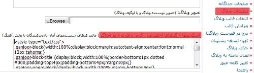
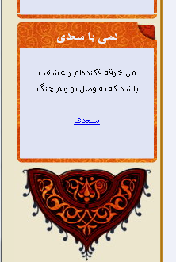
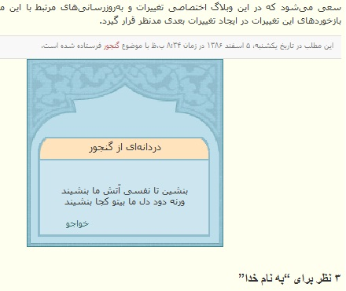

کد شعر را کجا کپی کنیم؟
این بستگی به نظر شما دارد. بعضیها دوست دارند شعر را در کنارۀ چپ یا راست وبلاگ یا سایتشان بگذارند. بعضی سرویسهای وبلاگنویسی امکانات خاصی برای آسانسازی این کار ارائه میکنند. مثلاً بلاگفا امکان درج کد را در کنارۀ وبلاگ از طریق عنوان «تنظیمات وبلاگ» در میزکارش فراهم میآورد.
کاربران بلاگفا میتوانند برای مشاهدۀ راهنمای درج کد شعر در وبلاگهایشان اینجا را ببینند.
مزیت کنارههای وبلاگها آن است بیشتر در دیدرس قرار دارند و بازدیدکننده به سرعت شعر تصادفی را میبیند. اما معایبی نیز دارند و از آن جمله این که کنارههای وبلاگها معمولاً اندازۀ محدودی دارند. از این رو نمیتوان از قالبهای عریض مثل این در آنها استفاده کرد. ضمن آن که ممکن است متن شعر تصادفی نیز باعث شود عرض بلوک شعر از حد معمول بیشتر شود و مشکلاتی برای قالب سایت یا وبلاگ ایجاد کند. مشکل دیگری که درج کد در کنارۀ وبلاگ ممکن است ایجاد کند آن است که در بسیاری از قالبها کنارۀ وبلاگ پیش از متن اصلی (قسمت میانی) بارگذاری میشود و به همین دلیل، ممکن است کندی یا مشکلات سایت ارائهکنندۀ کد شعر باعث شود سایت یا وبلاگ دیر باز شود. برای حل این مشکل میتوانید از روش ارائه شده در صفحۀ بهینهسازی استفاده کنید.
نمونۀ خوبی از استفاده از کد در کنارۀ وبلاگ (با قالب تهیه شده توسط صاحب سایت و کاملاً متناسب با قالب سایت) را در این سایت ببینید. در این نمونه، روش بهینهسازی سرعت نیز به درستی اعمال شده است.
جای دیگری که معمولاً میتواند مناسب درج کد شعر باشد پایین نوشتهها و مطالب است. نمونۀ آن را در پایین نوشتههای وبلاگ تازههای گنجور به عنوان نمونه در این نوشته ببینید.
اجزای کد شعر، نمایش شعر از شاعر خاص، نمایش دو بیت ...
برای مشاهدۀ توضیحات مربوط به این گونه سؤالات بخش بدلخواهسازی را ببینید.